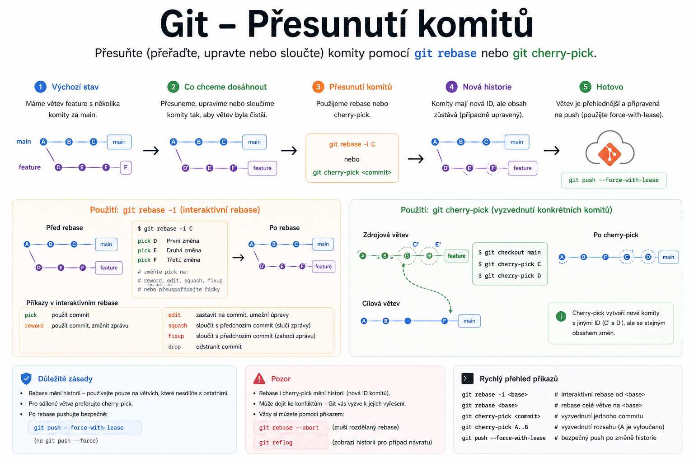

Git – Přesun commitů do nové nebo existující větve
Praktické rady, jak přesunout poslední commity ze jedné větve do nové nebo existující větve.

Přesun commitů do nové větve
Krok 1: Vytvoření nové větve z aktuální
git checkout master
git branch newbranch
git checkout master
- Přepne se do zdrojové větve (
master), vytvoří novou větev (newbranch) se stejnou historií.
Krok 2: Odstranění commitů ze zdrojové větve
git reset --hard HEAD~3
- Odstraní poslední 3 commity ze zdrojové větve (
master).
Varování
Tento krok je nevratný – commity budou ze zdrojové větve smazány.
Krok 3: Přepnutí do nové větve
git checkout newbranch
- Nová větev obsahuje původní commity, které byly odstraněny ze zdrojové větve.
Přesun commitů do existující větve
Krok 1: Merge commitů do cílové větve
git checkout existingbranch
git merge branchToMoveCommitFrom
- Přepne se do cílové větve (
existingbranch) a sloučí commity ze zdrojové větve (branchToMoveCommitFrom).
Krok 2: Odstranění commitů ze zdrojové větve
git checkout branchToMoveCommitFrom
git reset --hard HEAD~3
- Odstraní poslední 3 commity ze zdrojové větve.
Varování
Tento krok je nevratný – commity budou ze zdrojové větve smazány.
Krok 3: Přepnutí do cílové větve
git checkout existingbranch
- Pokračuj v práci na cílové větvi s přesunutými commity.
Poznámka
Více informací najdeš v diskuzi na Stack Overflow.